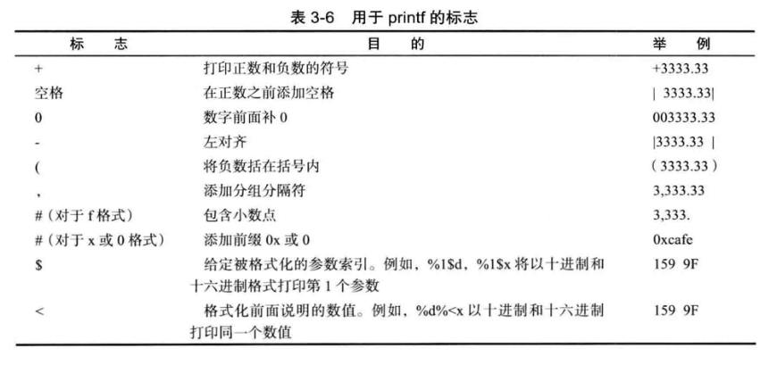

3.1 一个简单的Java程序
public class FirstSample{
public static void main(String[] args){
System.out.println("We will not use 'Hello, World!'");
}
}- Java区分大小写。
- 关键字public称为访问修饰符（access modifier），访问修饰符用于控制程序的其他部分对这段代码的访问级别。
- 关键字class表明Java程序中的全部内容都包含在类中。
- class后面是类名。类名必须以字母开头，后面可以是字母和数字的任意组合，长度没有限制，但是不能使用Java的保留字（比如public和class）。标准命名规范：类名必须是以大写字母开头的名词，如果名字有多个单词，每个单词的首字母都大写（骆驼命名法CamelCase）。
- 源代码的文件名与公共类的名字相同，扩展名.java。
- 运行已编译程序时，Java虚拟机从指定类的main方法开始执行，因此类的源文件中必须包含一个main方法代码才能执行。
- 大括号的作用是划分程序的各个部分（分块）。
- 分号是一条语句的结束标志。
- System.out.println()表示System.out对象调用了println方法，点号用于调用方法：object.method(parameters)，即函数调用。
3.2 注释
- //：注释从//开始到本行结尾的内容。
- /* 和*/：注释包含在其中的段落。
- /** 和*/，中间每一行以* 开头：用来生成本地文档。
注意：/* 和*/不能嵌套使用。
3.3 数据类型
Java是一种强类型语言，即每一个变量必须声明一种类型。
Java一共有8种基本类型（primitive type），其中4种整型，2种浮点类型，1种Unicode编码的字符单元类型char，和1种表示布尔值的boolean类型。
3.3.1 整型
整型表示没有小数部分的数值，它允许是负数。
| 类型 | 存储需求 | 取值范围 |
|---|---|---|
| int | 4字节 | -2 147 483 648 ~ 2 147 483 647 |
| short | 2字节 | -32 768 ~ 32767 |
| long | 8字节 | -9 223 372 036 854 775 808 ~ 9 223 372 036 854 775 807 |
| byte | 1字节 | -128 ~ 127 |
Java中，整型的表示范围与运行代码的机器无关，这解决了程序从一个平台到另一个平台或者一个平台的不同操作系统之间的移植问题。
Java程序保证在所有机器上运行得到相同的结果，所以各种数据类型的取值范围是固定的。
长整型数值有一个后缀L或l（40000000000L），十六进制数值有一个前缀0x或0X（0xCAFE），八进制有一个前缀0（010）。
从Java7开始，前缀0b或0B可表示二进制数（0b1001），数字字面量可以加下划线增强可读性（0b1111_0100_0010，1_100_100）。
3.3.2 浮点类型
浮点类型表示有小数部分的数值。
| 类型 | 存储需求 | 取值范围 |
|---|---|---|
| float | 4字节 | 大约±3.402 823 47E+38F（有效位为6~7位） |
| double | 8字节 | 大约±1.797 693 134 862 315 70E+308（有效位15位） |
double表示这种类型的数值精度是float类型的两倍（双精度数值），绝大部分程序都采用double类型。
float类型的数值有一个后缀F或f（3.14F），没有后缀F的浮点数值（3.14）默认为double类型。浮点数值后缀也可以添加D或d（3.14D）。
表示溢出和出错情况的特殊浮点数值：
- 正无穷大：Double.POSITIVE_INFINITY
- 负无穷大：Double.NEGATIVE_INFINITY
- NaN（不是一个数字）：Double.NaN
注意：检测非数值时不能使用==，要使用isNaN方法。
if(x == Double.NaN) // is never true
if(Double.isNaN(x)) // check whether x is "not a number"3.3.3 char类型
char类型原本用于表示单个字符。但是现在有些Unicode字符可以用一个char表示，但是有些Unicode字符需要两个char。
char的字面量的值需要单引号括起来。例如，’A’表示编码值为65所对应的字符常量，”A”则表示一个包含字符A的字符串。
char类型的值可以表示为十六进制，范围从\u0000到\Uffff。
\u这样的称为转义序列，可以出现在字符字面量或字符串中，如’\u2122’（注册符号™），”Hello\n”，也可以出现在引号之外，public static void main(String\u005B\u005D args)，这里的两个编码表示的是[ 和 ]。
| 转义序列 | 名称 | Unicode值 |
|---|---|---|
| \b | 退格 | \u0008 |
| \t | 制表 | \u0009 |
| \n | 换行 | \u000a |
| \r | 回车 | \u000d |
| \" | 双引号 | \u0022 |
| \' | 单引号 | \u0027 |
| \\ | 反斜杠 | \u005c |
注意：
Unicode的转义序列在解析代码之前就被处理。比如，"\u0022+\u0022"并不能得到"+"，\u0022在解析之前就转换为"，这段代码变为""+""，输出是一个空字符串。
此外使用注释时要当心\u，比如// \u00A0 is a new line，这时会产生语法错误，因为\u00A0在读程序时已经被转换成换行符；比如 Look inside c:\users，也会产生语法错误，因为\u后面后没有4个十六进制数。
3.3.4 Unicode和char类型
（略）
3.3.5 boolean类型
boolean（布尔）类型有两个值：true和false，用来判断逻辑条件，整型和布尔值不能相互转换（不同于C++）。
3.4 变量
double salary;
int vacationDays;
long earthPopulation;
boolean done;Java的每个变量都有一个type，类型位于变量名之前。
变量名是一个必须以字母开头并由字母和数字组成的序列。字母包括大小写英文字母，_ ，$，或者其他语言中表示字母的任何Unicode字符。数字包括0～9和在其他语言中表示数字的Unicode字符。
提示：可以使用Character类的isJavaIdentifierStart和isJavaIdentifierPart来检某个查Unicode字符是否属于Java中的合法字母。
注意：$虽然是一个合法字符，但是要尽量避免使用。
Java不能使用保留字作为变量名。
3.4.1 变量初始化
声明一个变量后需要用赋值语句进行显式初始化，不要使用未初始化的变量。
赋值语句使用=。声明尽可能靠近变量第一次使用的地方。
3.4.2 常量
关键字final指示常量。
public class Constants{
public void main(String[] args){
final double CM_PER_INCH = 2.54;
System.out.println(CM_PER_INCH);
}
}常量只能被赋值一次，之后不能更改，常量名一般使用全大写。
关键字static final设置一个类常量，类常量能在一个类的多个方法中使用。
public class Constants{
public static final double CM_PER_INCH = 2.54;
public void main(String[] args){
System.out.println(CM_PER_INCH);
}
}3.5 运算符
运算符+、-、*、/、%分别表示加减乘除和取模（求余）运算。
注意：
- 参与
\运算的两个操作数都是整数时表示整数除法，否则表示浮点除法。 - 整数被0除会产生异常，浮点数被0除则会得到无穷大或NaN。
3.5.1 数学函数与常量
在Math类中，包含了各种各样的数学函数。
比如平方根和幂运算函数：
Math.sqrtMath.pow
比如三角函数：
Math.sinMath.cosMath.tanMath.atanMath.atan2
比如指数函数、自然对数、以10为底的对数：
Math.expMath.logMath.log10
最后还有 π和e常量的近似值：
Math.PIMath.E
3.5.2 数值类型之间的转换

- 6个实线箭头：无信息丢失的转换
- 3个虚线箭头：可能有精度丢失的转换
int n = 123456789;
float f = n; // f is 1.23456792E8当使用n和f进行二元操作时（例如n+f），会隐式地先将两个操作数转换为同一类型再进行计算。
- 如果两个操作数有一个是double，另一个也会转换为double。
- 否则，如果一个是float，另一个也会转换为float。
- 否则，如果一个是long，另一个也会转换为long。
- 否则，两个都被转换为int。
3.5.3 强制类型转换
虽然可能会丢失一些信息，但有时候也许要将double转换为int。
强制类型转换（cast）可以实现可能丢失信息的类型转换，比如：
double x = 9.997;
int nx = (int)x;nx的值是9，强制类型转换结果是截断小数部分。
Math.round方法：四舍五入运算得到最接近的整数。
double x = 9.997;
int nx = (int)Math.round(x);nx的值是10。
注意：调用round方法时仍然需要使用(int)，因为round的返回结果是long类型。
3.5.4 结合赋值和运算符
可以在赋值中使用二元运算符，比如x+=4等价于x = x+4。
注意：如果运算符得到的值类型与左侧操作数类型不同，会发生强制类型转换。比如x是int，x+=3.5是合法的，x将被设置为(int)(x+3.5)。
3.5.5 自增与自减运算符
加1和减1可以表示为n++和n--。
由于自增和自减运算会改变操作数的值，因此操作数不能是数值，应该是变量。
自增与自减还可以表示为前缀形式++n和--n，单独使用时和后缀形式没有区别，但是出现在表达式中时，二者就有区别了。
int m = 7;
int n = 7;
int a = 2 * ++m;
int b = 2 * n++;结果是，a = 16，m = 8，b = 14，n = 8。
- 前缀形式会先完成加1，再参与运算，
int a = 2 * ++m中先进行m+1=8，再进行2*8。 - 后缀形式会先参与运算，再完成加1，
int b = 2 * n++中先进行2 * n，再进行n+1=8。
3.5.6 关系和boolean运算符
关系运算符：
- 相等：
== - 不等：
!= - 小于：
> - 大于：
< - 小于等于：
<= - 大于等于：
>=
逻辑运算符：
- 非：
! - 与：
&& - 或：
||
关系运算符和逻辑运算符得到的结果都是布尔值（true或false）。
注意：&&和||都是按照短路的方法来求值：如果第一个操作数（第一个条件）已经能够确定表达式的值，第二个操作数就不进行计算了，即使用&&时，第一个条件为false，则结果为false；使用||时，第一个条件为true，则结果为true。
三元操作符：condition ? expression1 : expression2
condition为true，则执行expression1，为false，则执行expression2。
3.5.7 位运算符
对于整型，可以用位运算符对它二进制表示的每一个位进行操作。位运算符包括：
- and：
& - or：
| - xor：
^ - not：
~ - 左移：
>> - 右移：
<< - 用0填充高位：
>>>
3.5.8 括号与运算符级别
| 优先级 | 运算符 | 结合性 |
|---|---|---|
| 1 | () [] . | 从左向右 |
| 2 | ! ~ ++ -- +(正号) -(负号) | 从右向左 |
| 3 | * / % | 从左向右 |
| 4 | +(加法) -(减法) | 从左向右 |
| 5 | << >> >>> | 从左向右 |
| 6 | < <= > >= instanceof | 从左向右 |
| 7 | == != | 从左向右 |
| 8 | & | 从左向右 |
| 9 | ^ | 从左向右 |
| 10 | | | 从左向右 |
| 11 | && | 从左向右 |
| 12 | || | 从左向右 |
| 13 | ?: | 从右向左 |
| 14 | = += -= *= /= %= &= |= ^= <<= >>= >>>= | 从右向左 |
- 表中优先级数字越小，优先级越高。
- 结合性指运算符结合的顺序，比如
+=是右结合，a += b += c等价于a += (b += c)，比如负号-是右结合，1 + -2等价于1 + (-2)。 instanceof是判断对象是否是某个类或接口类型。
String name = "James";
boolean result = name instanceof String; // 由于 name 是 String 类型，所以返回真- 注意区分正负号和加减号，位操作符与逻辑运算符。
- 实际开发中不用去刻意记忆和使用运算符优先级，多使用括号。
3.5.9 枚举类型
变量取值局限在一个范围内时可以自定义枚举类型来表示。
enum Size {SMALL, MEDIUM, LARGE, EXTRA_LARGE};
Size s = Size.MEDIUM;Size类型的变量只能存储这个类型声明时给定的某个枚举值或者null，null表示这个变量没有设置任何值。
3.6 字符串
Java没有内置字符串类型，而是在标准Java库中提供了一个预定义类String。
String e = "";
String greeting = "Hello";3.6.1 子串
String类的substring(x, y)，两个参数表示从提取x位开始到y-1位结束的子串，子串的长度是y-x。
String greeting = "Hello";
String s = greeting.substring(0, 3); // s = "Hel"3.6.2 拼接
字符串通过+号进行拼接。
String expletive = "Expletive";
Strng PG13 = "deleted";
String message = expletive + PG13; // message = "Expletivedeleted"注意拼接后中间不会存在空格。
如果将一个字符串与一个非字符串的值进行拼接，后者将被转换为字符串。事实上任何一个Java对象都可以转换为字符串。
int age = 13;
String rating = "PG" + age; // rating = "PG13"String类提供静态方法join，将多个字符串按照一个分隔符进行拼接。
String all = String.join("/", "S", "M", "L", "XL"); // all = "S/M/L/XL"3.6.3 不可变字符串
String类没有提供修改字符串值的方法，比如对于字符串变量greeting的值”Hello”，不能通过修改最后两个字符直接将其修改为”Help!”（这与C语言明显不同），应该使用greeting = greeting.substring(0,3)+"p!"这样的语句来修改。
String类的对象称为不可变字符串，好比对于一个数字3，它永远都是3，一个字符串“Hello”永远是这几个字母组成的序列，而不能修改其中的一个字符。
当然，也可以通过直接修改字符串变量greeting，让它引用另一个字符串来达到修改内容的目的。
3.6.4 检测字符串是否相等
s.equals(t)：检测两个字符串是否相等。如果s与t相等，返回true；否则返回false。其中s和t可以是字符串变量，也可以是字符串字面量。
"Hello".equalsIngoreCase("hello")：不区分大小写的情况下检测两个字符串是否相等。
注意：一定不要使用运算符==来检测两个字符串是否相等！可以想象将各种字符串存放在公共的存储池中，字符串变量指向存储池的相应位置。==只能用来确定两个字符串放置在同一位置，即只有两个字符串放置在同一位置上，才返回true。但是即使是两个相同的字符串，也可能存在于不同位置。
3.6.5 空串与Null串
空串""是长度为0的字符串。str.leng()==0或str.equals("")来检测字符串是否为空串。空串依然是一个Java对象，有长度（0）和内容（空）。
字符串变量还可以赋值为null，表示目前没有任何对象与该变量关联。使用str == null来检测字符串是否是null。
在检查一个字符串既不是null也不是空串时，使用条件if(str != null && str.length() != 0)（利用短路）。
3.6.6 码点与代码单元
（略）
3.6.7 String API
（略）
3.6.8 构建字符串
使用+号拼接得到新字符串的方式十分低效，每次拼接，都会构建一个新的String对象，耗时且浪费空间。因为String对象是不可改变的，每次使用String类中的一个方法时，都要在内存中创建一个新的String对象，这就需要为该新对象分配新的空间。
StringBuilder可以解决这个麻烦。
StringBuilder builder = new StringBuilder();
builder.append(ch); // appends a char
builder.append(str); // appends a string需要构建字符串时使用String completedString = builder.toString()来得到一个String对象。
3.7 输入输出
3.7.1 读取输入
System.out.println：打印输出到“标准输出流”（即控制台窗口）。
System.in：读取“标准输入流”，需要定义一个Scanner类的对象。
Scanner类定义于java.util包，需要在源文件开头import java.util.*。凡是使用没有定义在基本java.lang包中的类时，都要使用import来加载相应的包。
Scanner in = new Scanner(System.in);
System.out.println("What is your name?");
String name = in.nextLine(); // 读取一行
String firstName = in.next(); // 读取一个单词，以空格为分隔符
System.out.println("How old are you?");
int age = in.nextInt(); // 读取一个整数
int weight = in.nextDouble(); // 读取一个浮点数3.7.2 格式化输出
System.out.println(x)默认以x对应数据类型的所允许最大非0数字位数打印输出，例如double x = 1000.0/3.0时，打印输出3333.3333333333335。
Java的格式化输出沿用C语言库函数重的printf方法。例如System.out.println("%.2f", x);，将打印输出3333.33。
每一个以%字符开始的格式说明符都用相应的参数进行替换，格式说明符尾部的转换符指示被格式化的数值类型。

此外，还有控制格式化输出的各种标志。比如对于逗号，System.out.println("%,.2f", 1000.0/3.0);，输出是3,333.33。

3.7.3 文件输入与输出
进行文件读取，需要用File对象构造一个Scanner对象。
Scanner in = new Scanner(Paths.get("myfile.txt"), "UTF-8");注意：如果文件名中包含反斜杠符号\，一定要在每个\前再加一个反斜杠，比如c:\\mydirectory\\myfile.txt。
进行文件写入，需要构造一个PrintWriter对象。对象参数只需要提供文件名。
PrintWriter out = new PrintWriter("myfile.txt", "UTF-8");如果该文件不存在，则会创建该文件。之后如同标准输出一样使用print、println和printf进行写入。
注意：如果用一个不存在的文件构造一个Scanner，或者用一个不能被创建的文件构造PrintWriter，就会产生异常，因此需要在方法后添加throws IOException。
3.8 控制流程
3.8.1 块作用域
块（block）即复合语句，是指由一对大括号括起来的若干条简单的Java语句，块确定了变量的作用域。一个块可以嵌套在另一个块中。
与C和C++不同，Java不允许在嵌套关系的两个块中声明同名变量。
3.8.2 条件语句
if(condition) statement
if(yourSales >= 2*target) {
bonus = 200;
performance = "Excellent";
}
else if(yourSales >= target) {
bonus = 100;
performance = "Satisfactory";
}
else {
System.out.println("Your loser.");
}3.8.3 while循环
while(condition) statement
public class Retirement {
public static void main(String[] args) {
// read inputs
Scanner in = new Scanner(System.in);
System,out.print("How much money do you need to retire? ");
double goal = in.nextDouble();
System.out.print("How much money will you contribute every year? ");
double payment = in.nextDouble();
System.out.print("Interest rate in %: ");
double interestRate = in.nextDoubl();
double balance = 0;
int years = 0;
// update account balance while goal isn't reached
while (balance < goal) {
balance += payment;
double interest = balance * interestRate / 100;
balance += interest;
years++;
}
// add this year's payment and interest
System.out.println("You can retire in " + years + " years.");
}
}while循环会先检查循环条件，因此循环体中的代码可能一次都不会被执行。
do statement while(condition)
使用do…while可以使循环体至少执行一次，再检测循环条件。
do{
balance += payment;
double interest = balance * interestRate / 100;
balance += interest;
years++;
// print current balance
System•out.printf("After year %d, your balance is %.2f%n", year, balance);
// ask if ready to retire and get input
System,out.print("Ready to retire? (Y/N) ");
input = in.nextO;
}
while(input.equals("N"));3.8.4 for循环
for(int i = 1; i <= 10; i++)
System.out.println(i);有一条不成文的规则：for语句的3部分应该对同一个计数器变量进行初始化、检测和更新。
注意：检测浮点数是否相等时要十分小心，例如for(double x = 0; x != 10; x += 0.1)，这个循环可能永远不会结束，因为浮点数本身存在的误差，最终可能得不到精确值。
3.8.5 多重选择：switch语句
Scanner in = new Scanner(System.in); System.out.printC'Select an option (1, 2, 3, 4) M); int choice = in.nextlnt();
switch (choice) {
case 1:
...
break;
case 2:
...
break;
case 3:
...
break;
case 4:
...
break;
default:
// bad input
break;
}switch语句将从与选项值匹配的case标签开始执行直到遇到break语句，或者switch语句的结束处停止（即如果一个case没有以break结束，则可能触发多个case）。如果没有相匹配的case，则执行default语句。
case标签可以是：
- 类型为char、byte、short、或int的常量表达式
- 枚举常量
- Java SE 7开始，还可以是字符串字面量
String input = ...;
switch (input.toLowerCase()){
case "yes""
...
break;
...
}
Size sz = ...;
switch(sz){
case SMALL:
...
break;
...
}3.8.6 中断控制流程语句
break用于退出switch语句或跳出当前循环体。
while (years <= 100){
balance += payment;
double interest = balance * interestRate / 100;
balance += interest;
if(balance >= goal) break;
years++;
}continue用于跳过本次循环的后续语句，终止本次的循环，回到循环语句的首部。
Scanner in = new Scanner(System.in);
while (sum < goal){
System.out.print("Enter a number: ");
n = in.nextInt();
if (n < 0) continue;
sum += n; // not executed if n < 0;
}此外还有goto，带标签的break和continue，因为这样的语句会打破程序的正常执行逻辑，使程序变得很不易读且容易出错，不建议使用。
3.9 大数值
java.math包中有两个类BigInteger和BigDecimal，这两个类可以处理包含任意长度数字序列的数值，用于处理基本整数和浮点数精度不能满足要求的情况。
BigInteger实现任意精度的整数运算，BigDecimal实现任意精度的浮点数运算。
静态方法valueOf可以将普通数值转换为大数值。。
大数值不能使用算术运算符进行操作，而要使用大数值类中的相应方法。
BigInteger a = BigInteger.valueOf(100);
BigInteger c = a.add(b);
BigInteger d = c.multiply(b.add(BigInteger.valueOf(2)));3.10 数组
数组是一种用来存储同一类型值集合的数据结构。通过一个整型下标可以访问数组中的每一个值。
int[] a
声明数组变量时，需要指出数组类型（数据元素类型紧跟[ ]）和数组变量名。
int[] a = new int[100]
将a初始化为一个真正的数组，使用new运算符创建数组。数组长度不一定必须是常量。
这个数组创建好后下标范围是0~99，可以给数组元素赋值，例如使用一个循环：
int[] a = new int[100];
for(int i = 0; i < 100; i++)
a[i] = i;创建一个数字数组时，所有元素默认初始化为0；创建一个boolean数组时，所有元素默认初始化为false；创建一个对象数组时，所有元素默认初始化为null。
注意：如果创建一个100个元素的数组，但是试图访问a[100]，会引发”array index out of bounds”异常。
array.length可以用于获得数组中的元素个数（即数组的大小）。数组创建后大小不能被改变，数组列表（ArrayList）可以用于运行时动态扩展数组大小。
3.10.1 for each循环
for(variable: collection) statement
这里的collection集合必须是一个数组或者一个实现了Iterable接口的类对象（比如ArrayList）。
for(int element: a)
System.out.println(element);如果只是要打印数组，可以使用Array.toString(a)。
3.10.2 数组初始化及匿名数组
除了使用new来创建一个数组，还可以在创建数组同时进行赋值：
int[] smallPrimes = {2, 3, 5, 7, 11, 13}
还可以初始化一个匿名数组：
new int[] {2, 3, 5, 7, 11, 13}
这种语法可以在不创建新变量的情况下重新初始化一个数组。
smallPrimes = new int[] {17, 19, 23, 29, 31, 37};
//等价于
int[] anonymous = {17, 19, 23, 29, 31, 37};
smallPrimes = anonymous;注意：Java允许数组长度为0，即可以创建一个长度为0的数组。
3.10.3 数组拷贝
Java允许将一个数组变量拷贝给另一个数组变量，这时两个变量引用同一个数组。
int[] luckyNumbers = smallPrimes;

将数组变量拷贝给另一个数组实际上只是拷贝了一个引用，即这两个变量指向的是同一个数组，可以通过任何一个数组变量来访问这个数组和修改数组元素。
如果想要将一个数组里的所有数组元素值拷贝给一个新数组（即创建一个新的数组），需要使用：
int[] copiedLuckyNumbers = Arrays.copyOf(luckyNumbers, luckyNumbers.length);
第二个参数表示新数组的长度，可以通过扩大这个参数值来增加数组的大小，扩展后超出的部分没有给定的元素进行初始化时则按照之前的默认初始化规则进行赋值。如果指定的新数组长度小于原始数组长度，则只拷贝最前面的数组元素。
3.10.4 命令行参数
public class Message {
public static void main(String[] args){
if(args.length == 0 || args[0].equals("-h"))
System.out.print("Hello,");
else if(args[0].equals("-g"))
System.out.print("Goodbye,");
// print the other command-line arguments
for(int i = 1; i < args.length; i++)
System.out.print(" " + args[i]);
System.out.println("!");
}
}对于main方法，都带有一个String args[]的参数，这表明它将接收一个字符串数组，也就是命令行参数。对于上面的程序，使用java Message -g cruel world运行上面的程序，args[0] = "-g"，args[1] = "cruel"，args[2] = "world"，打印结果是“Goodbye, cruel world!”。
3.10.5 数组排序
Arrays.sort(a)
这个方法使用优化的快速排序算法进行数组排序。
3.10.6 多维数组
多维数组使用多个下标访问数组元素，适用于表示表格或更加复杂的排列形式。
double[][] balances;
balances = new double[NYEARS][NRATES];
int[][] magicSquare = { {16,3,2,13}, {5,10,11,8}, {9,6,7,12}, {4,15,14,1}}
可以使用嵌套的for循环或for-each循环来遍历数组，Arrays.deepToString(a)可以返回二维数组a的字符串表示。
3.10.7 不规则数组
实际上，Java没有多维数组这种数据结构，只有一维数组，而多维数组被解释为“数组的数组”。

balances[i]引用第i个子数组，它本身也是一个数组，balances[i][j]引用这个子数组的第j项，可以单独存取balances这个数组的子数组。
double[] temp = balances[i];
balances[i] = balances[i+1];
balances[i+1] = temp;利用这个特点，可以方便地构造一个“不规则”数组，即数组的每一行有不同的长度。
int[][] odds = new int[NMAX + 1][];
for (int n = 0; n <= NMAX; n++);
odds[n] = new int[n + 1];